A look at the benefits of fleet-wide Energy Management and Reporting Systems (EMRS): a hard-wired AI closed-loop approach that respects operations, handles demand response, and has connected facilities with offsite utilities since 1998.
James E. Robinson, PE, P.Eng., CEM, CEP · Principal Project Engineer and Partner, DES · JRobinson@DESGlobal.com
Why closed-loop AI succeeds where earlier optimization projects stalled, and what that means for rolling it out across more than one facility.
Why traditional energy management optimization from the 1980s and 90s saw poor operational acceptance on the plant floor.
What changes when a control application honors the operator's own rule set instead of overriding it.
How a standardized, rule-based architecture shortens the path from assessment to a running system.
How this approach reshapes the assessment, execution, and maintenance workflow across a project.
The same closed-loop intelligence scales from a single boiler room to a multi-site industrial fleet.
Complex cogeneration and multi-fuel powerhouses integrated with offsite utilities and business units.
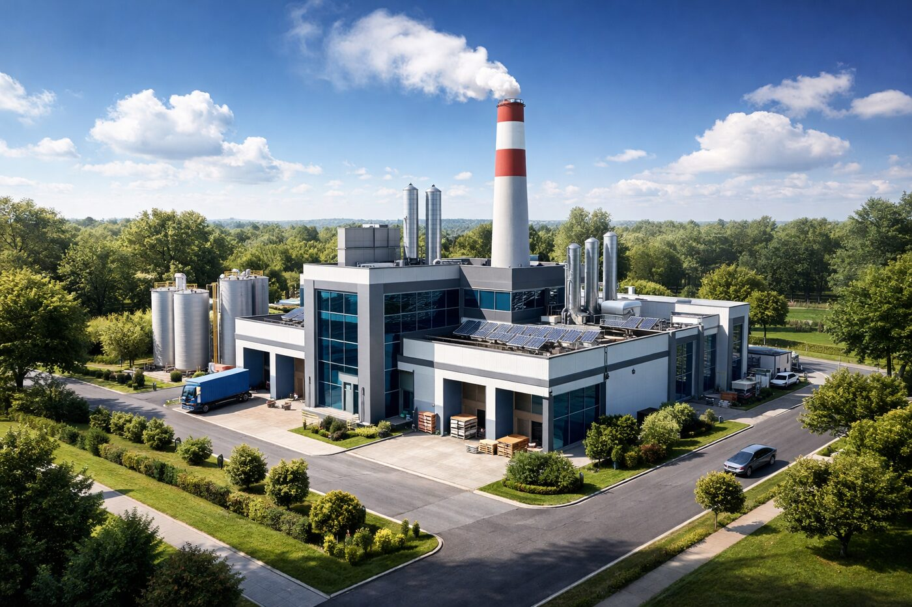
The same intelligence as large systems, delivered through ControlMaxx: a scalable DCS in a box.
Across 22 performance-guarantee projects.
A large-industrial EMRS has to satisfy the operator's own rule set while pulling the powerhouse, offsite utilities, and business units into a single intelligent system.
An oil sands cogeneration facility, dispatched from Calgary and presented at Power-Gen 2004 in Orlando as a reference large-industrial EMRS application.
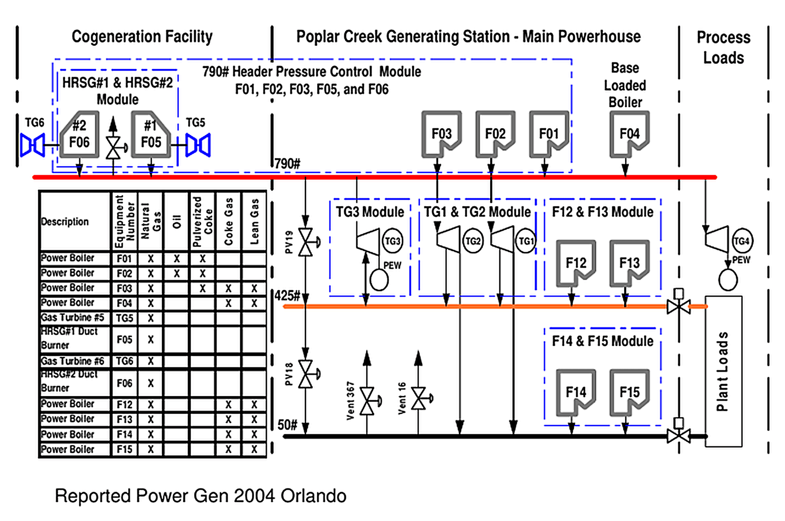
A powerhouse needs instrumentation to measure, control, and protect its equipment and people. Regulatory control alone still leaves control and management gaps that EMRS is built to close.
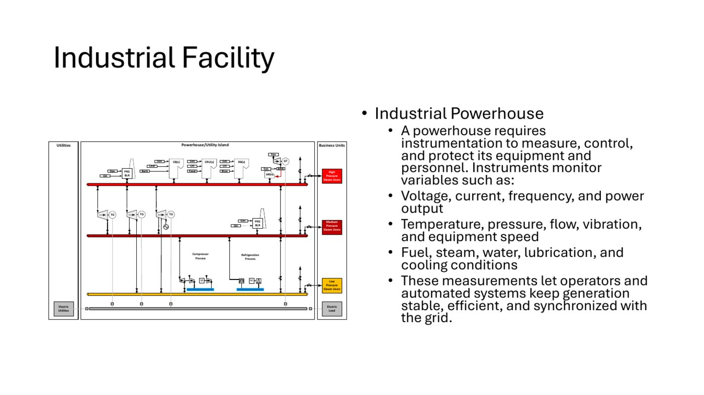
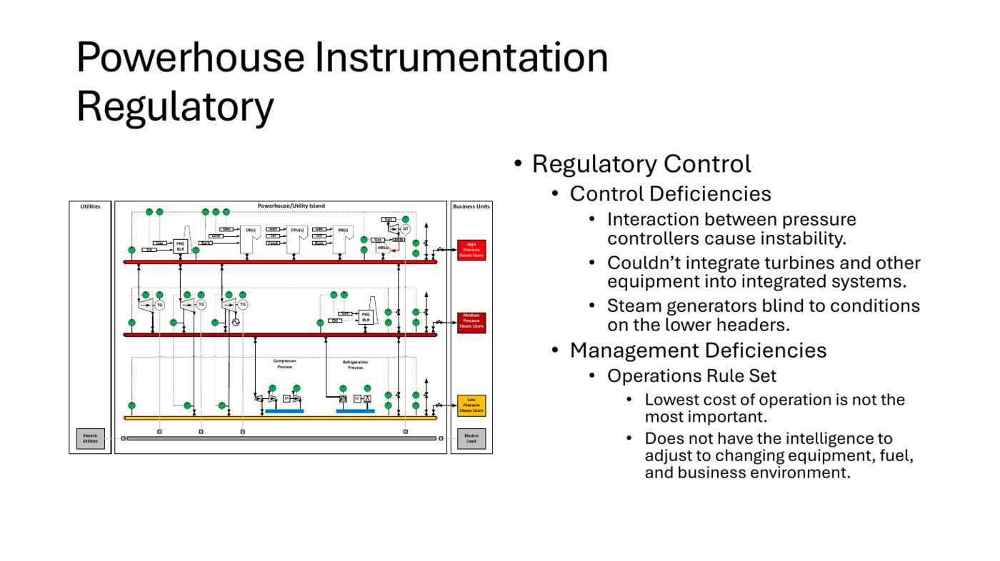
A new class of controller that supports multiple advanced process control optimizers, runs in milliseconds, and honors the plant's own operating modes.
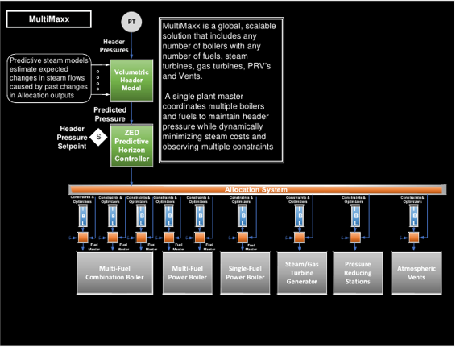
UltraMaxx adds anticipatory control: the powerhouse tracks business-unit demand and can participate directly in demand response, real-time pricing, and virtual power plant programs.
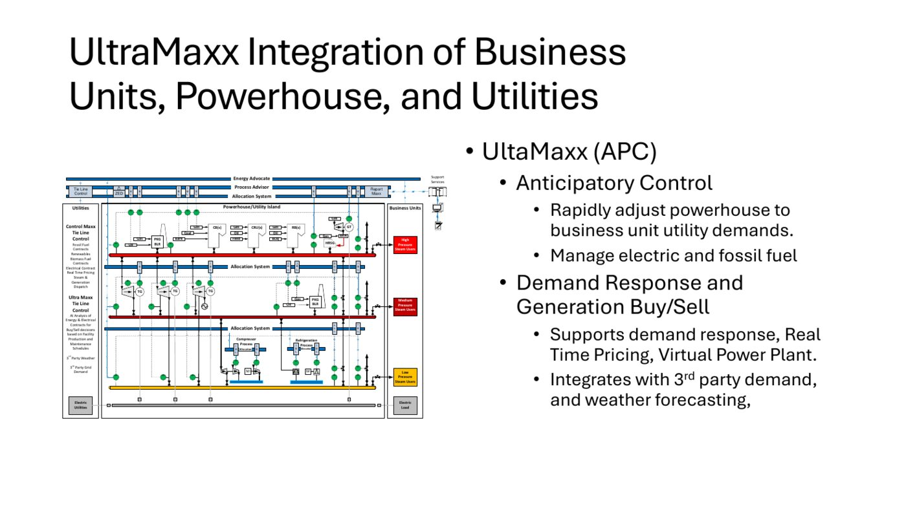
Allocation System, Process Advisor, Energy Advocate, and Support Services & Reporting sit above the powerhouse, utilities, and business units, working as one coordinated layer rather than separate point solutions.
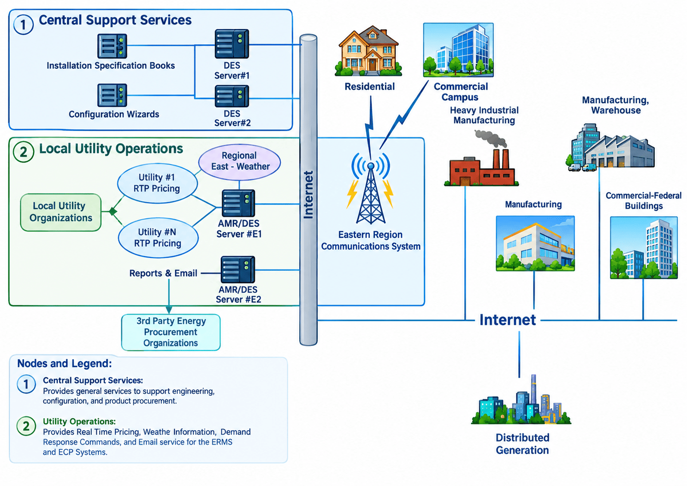
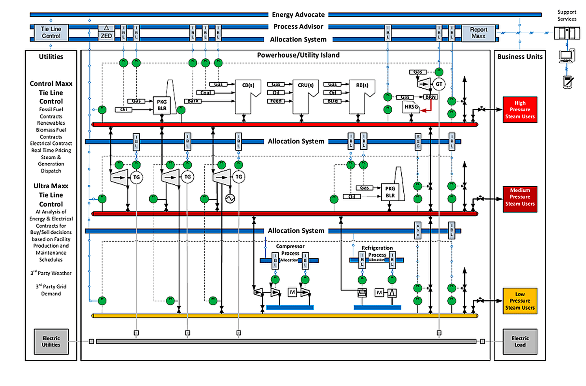
Smaller facilities get the same closed-loop benefits as large industrial sites, delivered through ControlMaxx: a high-performance DCS in a box with Process Advisor, Energy Advocate, predefined layouts, and AI configuration tools built in.
Internal processing runs in milliseconds on cost-effective standard servers. BridgeMaxx connects to your existing DCS, PLC, turbine-generator, and gas-turbine systems, so ControlMaxx layers on top of what you already have rather than replacing it.
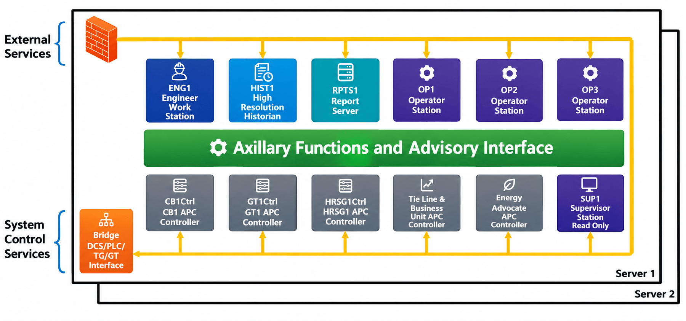
Rolling EMRS out across a fleet takes a corporate champion, a clear view of workflow impact, a scalable DCS-in-a-box approach, configuration wizards, and a reporting system built for comparison across facilities.
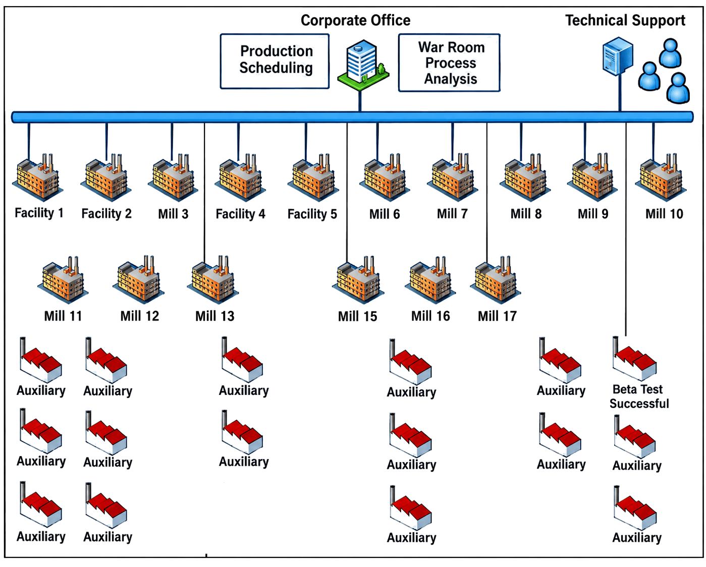
An AI-enhanced workflow: assessment identifies opportunity where savings alone don't tell the whole story, execution uses EMRS analytics to stand the system up, and ongoing maintenance and service works with the operator to shape long-term behavior.
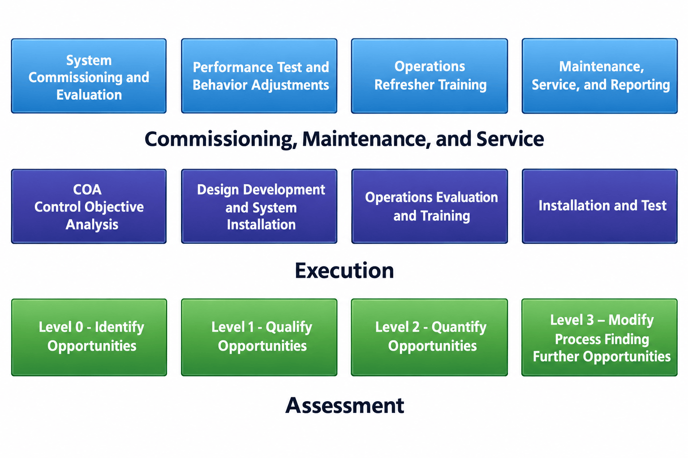
James Robinson and the DES engineering team are happy to walk through how this applies to your specific powerhouse, fleet, or business units. No obligation, no sales pitch, just a straight conversation.